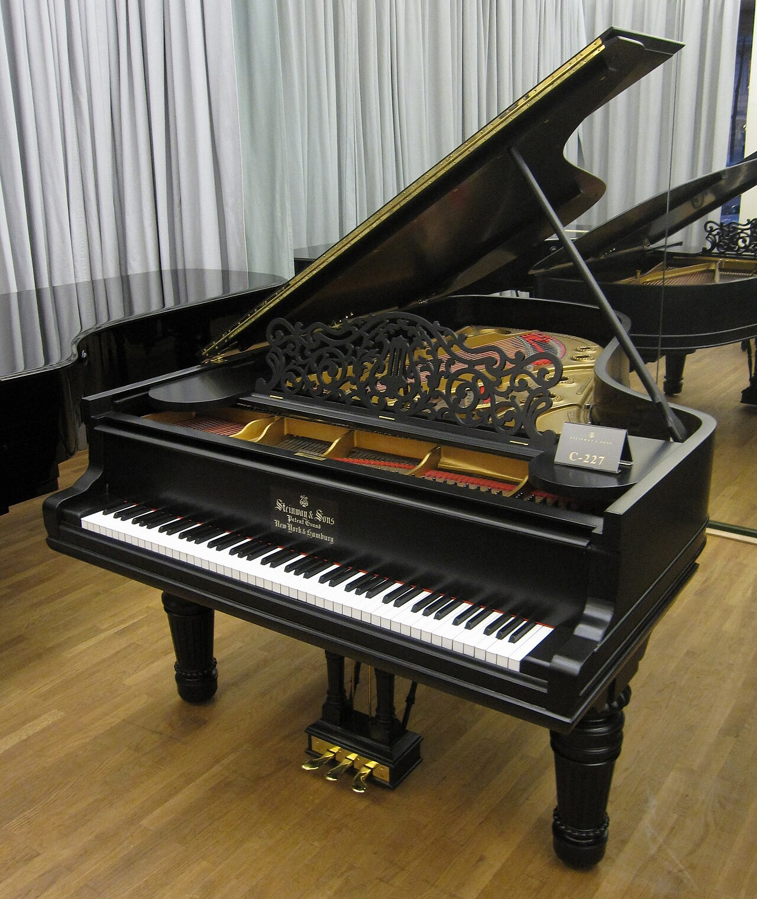
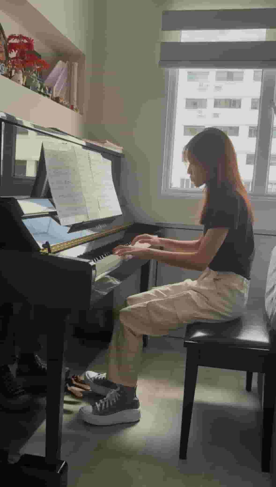
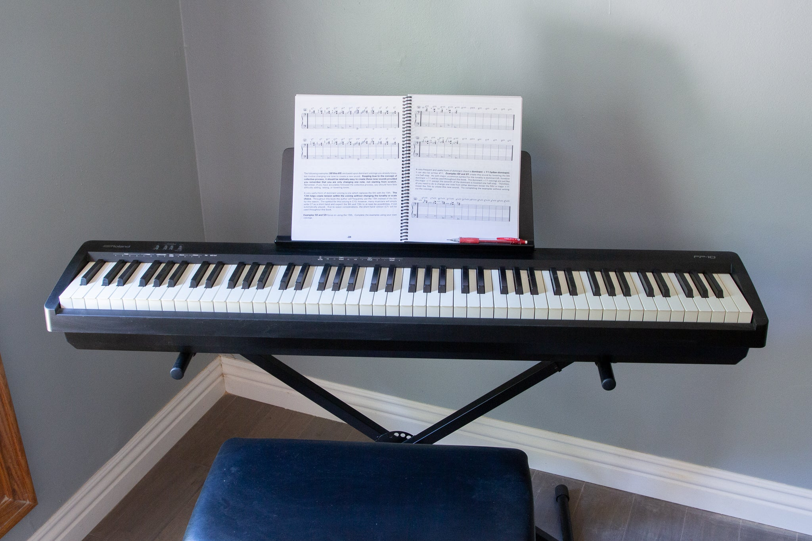

Benefits ✨
Playing the piano provides many physical, mental, and emotional benefits. Here are some of the key advantages of learning this instrument:
1. Improving Memory 🧠
Learning and memorising songs helps strengthen the brain's ability to retain information. Sight-reading sheet music also trains the brain to recognise patterns more efficiently.
2. Develops Motor Skills 🤸
Playing the piano requires both hands to move independently while reading sheet music and, on some occasions, using the foot pedals. This helps improve coordination, multitasking skills, and overall motor control.
3. Sharpens Focus 💡
Playing the piano requires a lot of focus on reading sheet music, maintaining rhythm, and coordinating hand movements simultaneously. Regular practice helps sharpen focus and improves attention to detail.
4. Builds Discipline and Patience 🎯
Learning a song takes time and regular practice to master. Throughout the learning journey, there will be times when certain parts are challenging to play. Overcoming these obstacles teaches perseverance, patience, and the value of consistent effort.
Considerations 🤔
Playing the piano is a valuable skill that takes time and dedication to develop. Understanding what to expect before you begin can help you stay motivated throughout your learning journey. Here are some important considerations to keep in mind before getting started:
1. Budget 💰
Learning the piano can be a significant investment. Besides purchasing a piano, you may also need to pay for lessons, books, exams, and maintenance. Over my 9 years of learning the piano, the amount of money I have invested in piano is more than S$20,000.
2. Space 📦
Pianos can take up a considerable amount of space, especially upright and grand pianos. Before buying one, ensure that you have enough room that has an outlet for the instrument and a comfortable place to practice.
3. Time Commitment 🕒
Learning the piano requires regular practice and dedication. Setting aside around an hour each day to practise consistently can help you develop your skills and make steady progress.
Minigame
Ready to test your piano knowledge? Guess the correct piano note that is played in the audio and see how well you know your musical notes!
Not submitted
What Is A Piano? 🎹
The piano is a keyboard instrument that creates sound when its keys are pressed. Inside the piano, small hammers strike strings to produce different notes that have different pitch. It is commonly used for solo performances, accompaniment, composing music, and music education.
A Personal Perspective 🙋♀️
I started learning the piano when I was 8 years old, and it was definitely not an easy journey. From learning the basics to mastering advanced techniques, every step required patience, dedication, and consistent practice. Over the years, I completed Grade 8 Piano Performance and Grade 5 Music Theory, along with other musical achievements. Milestones that reflect not only my musical growth but also the perseverance and discipline I developed along the way. These experiences inspired me to create this webpage to share my knowledge and introduce others to the wonderful world of piano.
Types of Pianos 🎼
Grand Piano 𓏲ּ𝄢
Grand pianos have horizontal strings and a large body, producing a rich and powerful sound. They are commonly used in concert halls and by professional pianists. Their larger size also allows for more precise key control.

Creds: Wikipedia - PianoUpright Piano ♬.ᐟ
Upright pianos have vertical strings, making them more compact than grand pianos. I personally own an upright piano, which I have practised on throughout my piano journey. Due to their compact size and good sound quality, upright pianos are commonly found in homes, schools, and music studios.

Digital Piano ‧₊˚♪𝄞₊˚⊹
Digital pianos use electronic sound samples instead of strings and hammers. They often include useful features such as volume control,headphone support, and different instrument sounds, making them popular for home practice. They are also a more affordable alternative to acoustic pianos.

Creds: Nytimes - Digital Piano